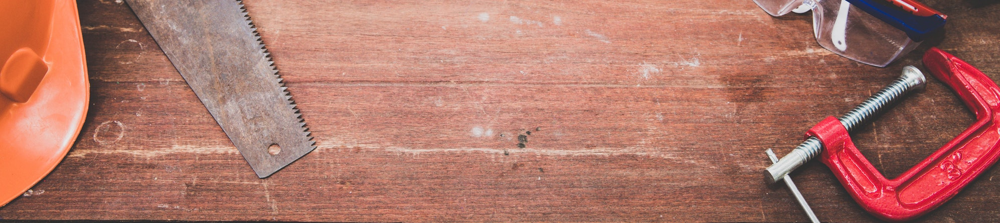

Ressources complémentaires

Liste des ressources complémentaires
Présentations
Présentation réalisée pour les citoyens accompagnants le 27 Janvier 2020. Premier point d'étape pour les accompagnants.
Téléchargeable ici.
Ressources liées à l'activité physique
Page principale